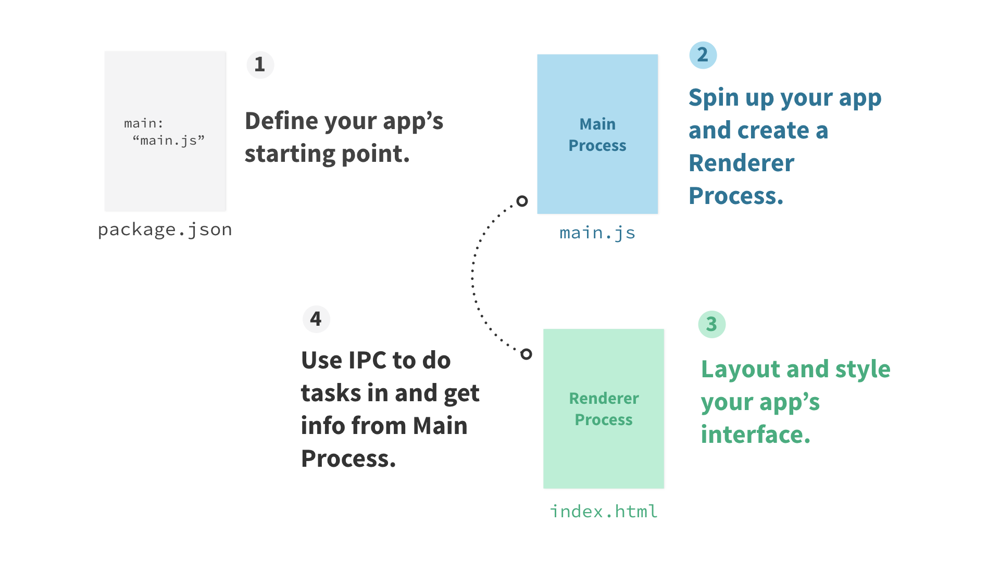
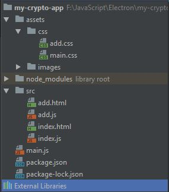
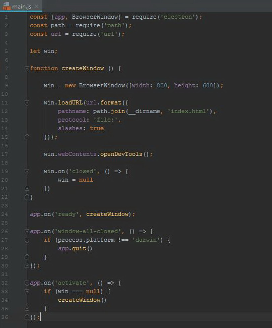
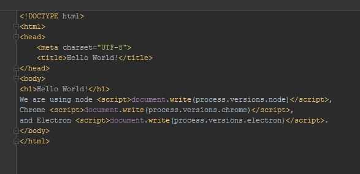
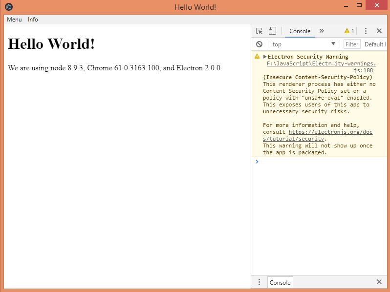

What is Electron?
- Open Source Framework
- Cross Platform Desktop Apps
- HTML, CSS, JS
Problems without Electron
- Different languages for websites and desktop apps
- Hard to acces native platform features
What competitors are there?
How it works?

Processes


Think of it like this

Note on security
- By default, you get full access to node.js in renderer processess
- You can still achieve a degree of sandbox through
- disabling the node integration, enable contextIsolation in the whole rendere process
- enclosing the content in webview
...be aware that displaying arbitrary content from untrusted sources poses a severe security risk that Electron is not intended to handle.Electron docs
Access to native API

Put it all together
Get Started
- Install Node.js
- npm init
- npm install electron -g
- npm install --save-dev electron
Folder structure
package.json
{
"name": "your-app",
"version": "0.1.0",
"main": "main.js",
"scripts": {
"start": "electron ."
}
}
main.js
index.html
npm start
Why would I want to build a desktop application in the first place?
But why else would you want to write an application that works on the desktop today?

Why would I want to build a desktop application in Electron?